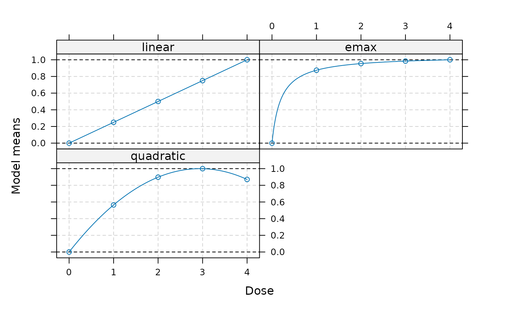
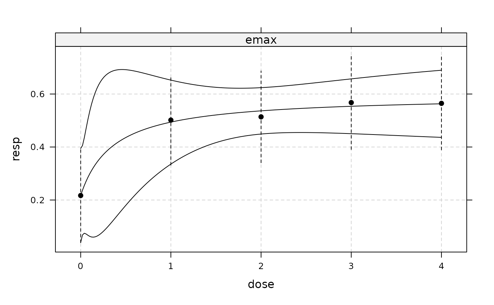
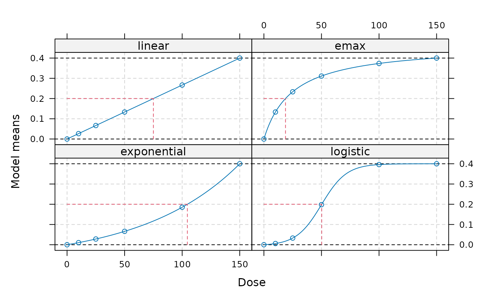

DoseFinding: Planning and Analyzing Dose Finding Experiments
Source:R/DoseFinding-package.R
DoseFinding-package.RdThe DoseFinding package provides functions for the design and analysis of dose-finding experiments (for example pharmaceutical Phase II clinical trials). It provides functions for: multiple contrast tests (MCTtest), fitting non-linear dose-response models (fitMod), a combination of testing and dose-response modelling (MCPMod), and calculating optimal designs (optDesign), both for normal and general response variable.
Details
The main functions are:
MCTtest: Implements a multiple contrast tests
powMCT: Power calculations for multiple contrast tests
fitMod: Fits non-linear dose-response models
optDesign: Calculates optimal designs for dose-response models
MCPMod: Performs MCPMod methodology
sampSize: General function for sample size calculation
References
Bornkamp B, Bretz F, Dette H, Pinheiro J (2011). “Response-adaptive dose-finding under model uncertainty.” The Annals of Applied Statistics, 1611–1631. doi:10.1214/10-AOAS445 .
Bornkamp B, Pinheiro J, Bretz F (2009). “MCPMod: An R package for the design and analysis of dose-finding studies.” Journal of Statistical Software, 29, 1–23. doi:10.18637/jss.v029.i07 .
Bretz F, Pinheiro JC, Branson M (2005). “Combining multiple comparisons and modeling techniques in dose-response studies.” Biometrics, 61(3), 738–748. doi:10.1111/j.1541-0420.2005.00344.x .
Dette H, Bretz F, Pepelyshev A, Pinheiro J (2008). “Optimal designs for dose-finding studies.” Journal of the American Statistical Association, 103(483), 1225–1237. doi:10.1198/016214508000000427 .
O'Quigley J, Iasonos A, Bornkamp B (2017). “Part III: Phase II Dose-Finding Trials.” In Handbook of Methods for Designing, Monitoring, and Analyzing Dose-finding Trials. CRC press.
Pinheiro JC, Bretz F, Branson M (2006). “Analysis of dose–response studies—modeling approaches.” In Dose Finding in Drug Development, 146–171. Springer.
Pinheiro J, Bornkamp B, Glimm E, Bretz F (2014). “Model-based dose finding under model uncertainty using general parametric models.” Statistics in Medicine, 33, 1646-1661. doi:10.1002/sim.6052 .
Seber GA, Wild CJ (2003). Nonlinear Regression. Wiley.
Author
Maintainer: Marius Thomas marius.thomas@novartis.com
Authors:
Bjoern Bornkamp bjoern.bornkamp@novartis.com (ORCID)
Jose Pinheiro
Frank Bretz
Ludger Sandig
Daniel Sabanes Bove daniel.sabanes_bove@rconis.com (ORCID)
Other contributors:
Novartis Pharma AG [copyright holder, funder]
Examples
data(IBScovars)
## perform (model based) multiple contrast test
## define candidate dose-response shapes
models <- Mods(linear = NULL, emax = 0.2, quadratic = -0.17,
doses = c(0, 1, 2, 3, 4))
## plot models
plot(models)

## perform multiple contrast test
test <- MCTtest(dose, resp, IBScovars, models=models,
addCovars = ~ gender)
## fit non-linear emax dose-response model
fitemax <- fitMod(dose, resp, data=IBScovars, model="emax",
bnds = c(0.01,5))
## display fitted dose-effect curve
plot(fitemax, CI=TRUE, plotData="meansCI")

## Calculate optimal designs for target dose (TD) estimation
doses <- c(0, 10, 25, 50, 100, 150)
fmodels <- Mods(linear = NULL, emax = 25, exponential = 85,
logistic = c(50, 10.8811),
doses = doses, placEff=0, maxEff=0.4)
plot(fmodels, plotTD = TRUE, Delta = 0.2)

weights <- rep(1/4, 4)
desTD <- optDesign(fmodels, weights, Delta=0.2, designCrit="TD")